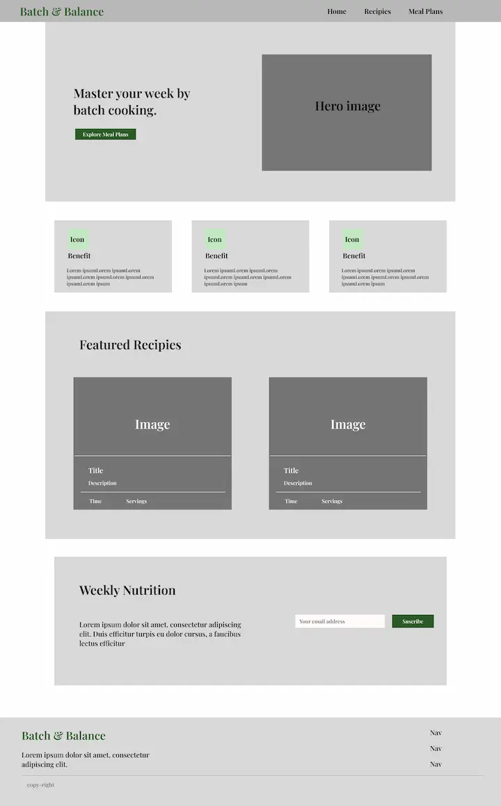
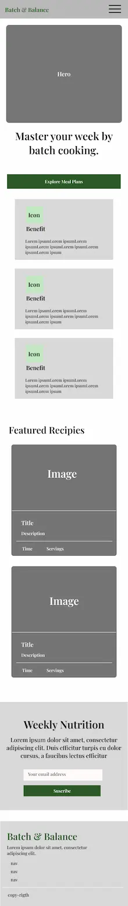

This is the official site plan document for the Final Project website.
Batch & Balance: This name was selected because it reflects the core mission of the website: preparing food in efficient batches while maintaining a balanced, healthy nutritional lifestyle.
The site provides practical strategies and resources for preparing healthy meals in advance. It offers a dynamic recipe gallery with nutritional breakdowns (macros, prep time) for quick daily options, as well as a planning guide to help users organize their weekly meal prep, store food correctly, and improve their dietary habits.
The selected color palette and its specific usage on the site include:
Primary Font: 'Playfair Display', serif — Applied to all main headings (h1, h2, h3) to give an editorial, clean, and organic feel.
Secondary Font: 'Inter', sans-serif — Applied to body text, paragraphs, lists, and general content for maximum readability and a modern look.
Large View (Desktop):

Small View (Mobile):
